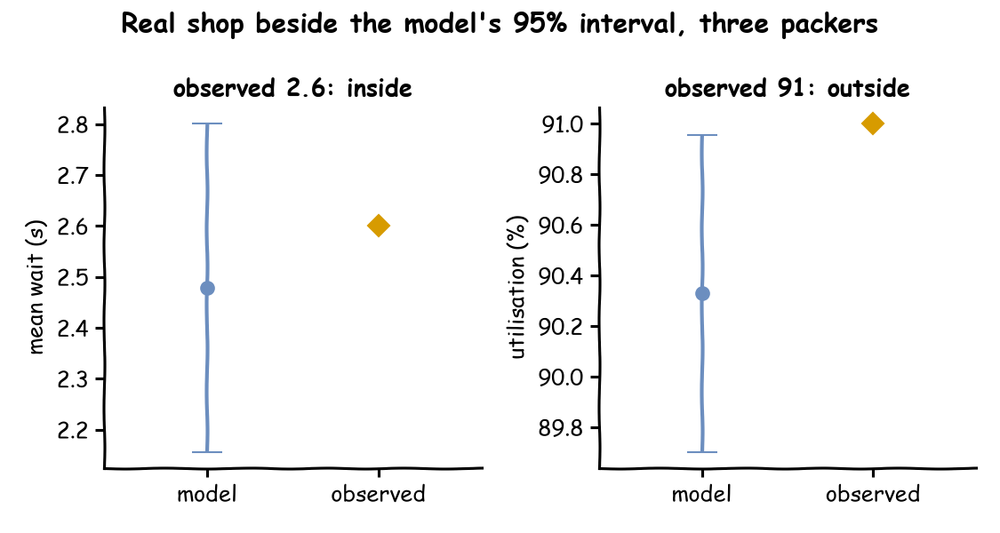

Comparing Designs chose a fourth packer from the busy hour model of Trusting Results, and Parameter Sweeps found the choice holds for rates from 1.6 to 1.9 orders a second. Both answers are only as good as the model. This page asks: does the program do what the model on paper says, and is that model good enough to decide the number of packers?
Decision: three packers or four.
Measures: the mean wait and the packers' utilisation.
Runs: one run of 10 seconds with fixed inputs, then the busy hour after its 2-minute warm-up, 20 replications of each design with seeds spawned from 42, and 10 replications for desflow explain --verify.
Assumptions: those of Trusting Results: orders at random at 1.8 a second, and the 40 packing times measured at the bench.
What You Will Learn
This page shows how to:
check a model against a trace worked by hand and against estimates at the extremes;
check it against Little's Law and the queueing formulas with desflow explain --verify;
compare it with values observed in the real shop, as tests that run again after every change.
What You Add
This page adds checks on the model, written as tests that fail when a check fails:
a run with fixed inputs, against a trace worked by hand;
runs at the extremes, against estimates made by hand;
Little's law and the queueing formulas of desflow explain --verify;
a comparison with values observed in the real shop;
a check that the decision still holds at a higher rate.
Checking and Validating explains each kind of check, and this page applies them to the shop.
Trace Fixed Inputs
Replace every random input with a constant, and the run has one answer that can be worked out by hand. Here the shop has three packers, an order arrives every second, each order takes 4 seconds to pack, and the run lasts 10 seconds. Save the files from Full Files in one folder and run the commands there:
# Three packers; an order arrives every second and takes 4 seconds to packresources:packers:{current_cap:3, max_cap:10}arrivals:orders:{dist:constant, value:1, spawn:pack_order}services:packing:{dist:constant, value:4}
desflow run checking_a_model.yaml prints the 20 records of the run, which are its trace, then the statistics at 10 seconds.
deffixed_shop()->SimulationContext:"""Three packers, an order every second and 4 seconds to pack each, for 10 s."""app=(SimulationContext(sim_id="Shop",factor=0,random_seed=42).add_resource("packers",current_cap=3,max_cap=10).add_arrival("orders",dist="constant",value=1).add_service("packing",dist="constant",value=4).with_stats("typical",interval=3600))
# Three packers; an order arrives every second and takes 4 seconds to packFIXED=SimParameter(sim_id="Shop",arrival={"orders":DistributionConfig(dist="constant",value=1)},service={"packing":DistributionConfig(dist="constant",value=4)},resources={"packers":CapacityConfig(current_cap=3,max_cap=10)},)
The full file reuses order_generator and pack_order from Trusting Results. In them, SimPy's env.timeout(...) makes each gap, and packers.request() waits for a free packer, as SimPy and desflow describes.
Worked by hand, orders arrive at 1, 2, ... 9 seconds. The first three start at once. Each later order starts when a packer becomes free, 4 seconds after that packer started its last order. The run stops at 10 seconds, before the events at that time:
Order
Arrives
Starts
Waits
Finishes
1, 2, 3
1, 2, 3
1, 2, 3
0
5, 6, 7
4
4
5
1
9
5, 6
5, 6
6, 7
1
after 10
7
7
9
2
after 10
8, 9
8, 9
not by 10
By the table, 4 orders finish and 5 are still in the shop. Seven orders started packing, and all 9 that arrived count in flows.orders.started. The waits of the seven add up to 5 seconds, so the mean wait is 5 / 7 = 0.714 seconds, and the longest is 2 seconds. The three packers can work 3 × 10 = 30 seconds in all, and they are busy for 24 of them, 80%. Orders 8 and 9 are still waiting at 10 seconds, after 2 seconds and 1 second, which adds 3 seconds. So the time orders spend in the queue adds up to 5 + 3 = 8 seconds. Over 10 seconds that gives an average queue of 8 ÷ 10 = 0.8 orders. The run reports the same six numbers. A difference here means a mistake in the program or in the trace worked by hand, and the mistake must be found before any experiment.
Push to the Extremes
A fixed trace checks the logic, not the busy hour itself. Run the busy hour with settings whose results can be estimated without the model. The checks run as an experiment on the busy hour, 20 replications of each design:
# The busy hour of Trusting Results, with its 2-minute warm-upmodel:trusting_results.yamluntil:1 hreplications:20seed:42measures:-tasks.pack_order.wait_mean-resources.packers.utilization_avg-resources.packers.queue_length_avg
# The busy hour of Trusting Results, with its 2-minute warm-up"model":shop,"until":"1 h","replications":20,"seed":42,"measures":["tasks.pack_order.wait_mean","resources.packers.utilization_avg","resources.packers.queue_length_avg",],
# The function that builds the busy hour, and its 2-minute warm-up"model":LowLevelModel(model,sim_id="Shop"),"warmup":WARMUP,"until":3600,"replications":20,"seed":42,"measures":["tasks.pack_order.wait_mean","resources.packers.utilization_avg","resources.packers.queue_length_avg",],
The summary also has the task's counts, such as tasks.pack_order.finished, although measures does not name them. The designs are variants of the number of packers:
# One packer cannot keep up, and ten are mostly idle"variants":{"three":{},"one":{"Shop.resources.packers.current_cap":1},"ten":{"Shop.resources.packers.current_cap":10},
The same keys, in the same mapping as the model.
Run the experiment and print the means of the two extremes:
one tasks.pack_order.wait_mean 1179.01
one resources.packers.utilization_avg 100.00
one tasks.pack_order.finished 2318.05
ten tasks.pack_order.wait_mean 0.00
ten resources.packers.utilization_avg 27.08
ten tasks.pack_order.finished 6287.00
One packer takes 1.5 seconds an order on average, so it can finish at most 3,480 ÷ 1.5 = 2,320 orders in the 3,480 seconds after the warm-up. Over the experiment's 20 replications, the one-packer design finishes 2,318 orders on average, with the packer busy 100% of the time and a mean wait of about 1,179 seconds. Ten packers would be busy 1.8 orders a second × 1.5 seconds ÷ 10 packers = 27% of the time. The experiment measures 27.08% on average, and the mean wait rounds to 0.00 seconds.
Turn each extreme into a check, so a later change that breaks it fails. A check tests the far end of the interval, so it passes only when the whole interval is within the bound:
checks:# One packer is busy all the time: the lower end of the interval is 99.9% or more-{measure:resources.packers.utilization_avg, variant:one, min:99.9}# With ten packers almost no order waits-{measure:tasks.pack_order.wait_mean, variant:ten, max:0.01}
"checks":[# One packer is busy all the time: the lower end of the interval is 99.9% or more{"measure":"resources.packers.utilization_avg","variant":"one","min":99.9,},# With ten packers almost no order waits{"measure":"tasks.pack_order.wait_mean","variant":"ten","max":0.01},
The same keys, in the same mapping as the model.
Check It Against Theory
Two checks compare the run with queueing theory: Little's law, which holds for any model that settles, and the formulas desflow explain applies where their assumptions hold.
Little's Law
Little's law says the average queue equals the arrival rate times the mean wait. The experiment measures the three separately, so they test each other. The arrival rate is the number of orders that arrived after the warm-up, flows.orders.started, divided by the 3,480 seconds that follow the warm-up:
Print the means of flows.orders.started, resources.packers.queue_length_avg and tasks.pack_order.wait_mean from summary.csv, and multiply by hand. The arrival rate is 6286.7 ÷ 3480 = 1.8065 orders a second:
three tasks.pack_order.wait_mean 2.479
three resources.packers.queue_length_avg 4.488
three flows.orders.started 6286.700
one tasks.pack_order.wait_mean 1179.013
one resources.packers.queue_length_avg 2127.625
one flows.orders.started 6286.700
HORIZON=3600-120# the measured part of the hour, after the warm-up, in secondsdeflittles_law(result,design):"""The mean queue, and the arrival rate and mean wait whose product it should be."""means={r["statistic"]:r["mean"]forrinresult.summaryifr["design"]==design}rate=means["flows.orders.started"]/HORIZONreturn(means["resources.packers.queue_length_avg"],rate,means["tasks.pack_order.wait_mean"],)
The same function, with HORIZON = 3600 - WARMUP.
The Builder and Low-level scripts print this check as the three: and one: lines queue 4.488, 1.8065 x 2.479 = 4.478 and queue 2127.625, 1.8065 x 1179.013 = 2129.913, after the lines of the extremes.
Over the 20 replications with three packers, the queue averages 4.488 orders, and 1.8065 orders a second × 2.479 seconds = 4.478 orders. The two agree. With one packer they also roughly agree: a queue of 2,127.6 orders against 1.8065 × 1,179.0 = 2,129.9. One packer's queue grows through the whole run and never settles, so its mean depends on how long the run lasts. The agreement there therefore proves less than it does for three packers. Agreement with the law shows the statistics are consistent with each other. It does not show the model is right for the shop: a model with the wrong packing times would agree just as well.
Queueing Formulas With explain
desflow explain --verify puts the queueing formulas beside runs of the model. It works out what the formulas give for each resource, runs the model unpaced, and marks each pair as agreeing or differing. Here it runs the busy hour of Trusting Results ten times:
context.analyze(verify=True, replications=10) returns the same comparison for a context loaded from a blueprint, or from a builder file with load_context. desflow explain on trusting_results.py does not work, because that file defines no module-level app. Giving it one does not help: the builder file starts its orders in an arrival_loop function, which is code, so the formulas cannot see which task an order starts and every measure reads not compared. The command above uses the YAML file of Trusting Results, which is the same model with its arrivals declared.
desflow explain does not support low-level models. It reads which arrival starts which task and which resource each task uses, and a low-level model does not declare those links: its SimPy code makes them as it runs.
Not estimated:
wait at packers: no closed formula for c > 1 with non-exponential times
Hints for utilisation 0.85:
packers with 4 units: utilisation 0.675, at most 0.85
packers with 3 units: utilisation 0.85 at 1.7 requests a second
Verify: 10 runs to 3600 s, seed 42
+---------------------------------------------------------------------------+
| node | measure | analysis | measured | ± | result |
|------------+--------------+----------+----------+----------+--------------|
| packers | utilization | 0.9 | 0.9034 | 0.009148 | agrees |
| packers | queue_length | - | 4.066 | 0.469 | not compared |
| pack_order | wait | - | 2.252 | 0.2476 | not compared |
| orders | throughput | 1.8 | 1.807 | 0.01546 | agrees |
+---------------------------------------------------------------------------+
Not compared:
packers queue_length: no closed formula for c > 1 with non-exponential times
pack_order wait: no closed formula for c > 1 with non-exponential times
--verify checks the implementation against the queueing analysis where it applies; it does not show that the model is close enough to the real system
The utilisation of 0.9 and the throughput of 1.8 orders a second agree with the replications. explain and --verify give the utilisation as a fraction, so 0.9034 is 90.34%, while the experiment's statistics give a percentage.
The measured wait, 2.252 ± 0.2476 seconds, is the mean of the 10 replications after the blueprint's 2-minute warm-up. The replications use the seeds of Trusting Results, so the figure equals that page's figure for 10 replications, as Busy Hour Figures lists. The wait and the queue length have no analytical value, and the Not estimated line says why: three packers with measured packing times have no closed formula. For them the interval of the experiment is the check, as the next section shows.
Agreement shows that the program computes what the model on paper says. It says nothing about whether the model is close enough to the real shop. Check Against Theory runs the same check on a shop the formulas describe in full.
Compare With the Real Shop
Only data from the real shop can show that the model is adequate. The observed values below are illustrative, and a real check uses the shop's own records. Suppose the shop recorded a mean wait of 2.6 seconds and a utilisation of 91% over 58 minutes of a busy hour with three packers. checking_a_model_observed.csv, in Full Files, holds them, with the unit, population and horizon of each, as Experiment Results describes. The experiment places each value beside the three-packer interval:
# Illustrative values for the real shop, which has three packers;# a real check reads the shop's own recordsobserved:{file:checking_a_model_observed.csv, variant:three}
# Illustrative values for the real shop, which has three packers;# a real check reads the shop's own records"observed":{"file":str(HERE/"checking_a_model_observed.csv"),"variant":"three",},
The same key, in the same mapping as the model.
The busy-hour wait with three packers and measured packing times has no closed formula in Queueing Basics, so the model's runs are the check. Each interval below is the 95% interval of the model's mean over the 20 replications with three packers. An interval for a mean is narrow, and one observed period is not a mean: it varies about as much as one run does, so only 8 and 4 of the 20 single runs fall inside these two intervals. Compare each observed value with the standard deviation of one run instead. A value more than about two of these from the model's mean is a disagreement that the study must explain before it trusts the model for the decision:
Measure
Observed in the shop
Interval for the model's mean
Standard deviation of one run
Distance from the model's mean
Result
Mean wait
2.6 seconds
2.16 to 2.80 seconds
0.69 seconds
0.18 standard deviations
agrees
Utilisation
91%
89.70 to 90.96%
1.34 points
0.5 standard deviations
agrees
Each tab prints the mean, the standard deviation of one run, the distance and the number of the 20 runs inside the interval, for the two measures:
The command reads the observed values, the intervals in summary.csv and the 20 runs in results.csv:
defagreement(result,design="three"):"""For each observed value: the model's mean, the standard deviation of one run, the distance in standard deviations, and how many of the runs lie inside the interval for the mean."""rows=[]forrowinresult.observed:runs=[r["value"]forrinresult.resultsifr["design"]==designandr["statistic"]==row["measure"]]mean,sd=statistics.mean(runs),statistics.stdev(runs)inside=sum(row["low"]<=value<=row["high"]forvalueinruns)rows.append((row["measure"],mean,sd,abs(row["value"]-mean)/sd,inside,len(runs)))returnrows
The script prints one line for each measure, after the lines of the earlier sections:
tasks.pack_order.wait_mean: mean 2.48, sd 0.69, distance 0.18 sd, 8 of 20 runs inside
resources.packers.utilization_avg: mean 90.33, sd 1.34, distance 0.50 sd, 4 of 20 runs inside
The same function and the same two lines, from checking_a_model_low_level.py.
The utilisation lies outside the interval for the mean and still agrees, because one observed hour is not a mean. An observed utilisation of 95% would be (95 - 90.33) ÷ 1.34 = 3.5 standard deviations away. The study would then check how the shop measured its utilisation, or whether the packing times are right.
Test the Sensitivity
Parameter Sweeps found that the four-packer wait stays low at every rate. Keep that as a check, so a change to the model that breaks it fails. Add a design with four packers, the chosen number, at 1.9 orders a second, about 6% above the estimate of 1.8:
# The design chosen in Comparing Designs, at a rate 6% above the estimatefour-busier:{Shop.resources.packers.current_cap:4, Shop.arrival.orders.rate:1.9}
# The design chosen in Comparing Designs, at a rate 6% above the estimate"four-busier":{"Shop.resources.packers.current_cap":4,"Shop.arrival.orders.rate":1.9,},
# Four packers keep the mean wait under half a second at the higher rate{"measure":"tasks.pack_order.wait_mean","variant":"four-busier","max":0.5,},
The same keys, in the same mapping as the model.
At 1.9 orders a second, the mean wait with four packers is 0.35 ± 0.02 seconds over 20 replications. The upper end of its interval, 0.37 seconds, is under the bound of 0.5 seconds, so the check passes.
Run the Checks
Run the checks after every change to the model, in the same way as the tests of any program. The Builder and Low-level tabs run pytest, which desflow does not install. Run it with uv run --with desflow --with pytest pytest checking_a_model.py, or install it with uv add --dev pytest in a uv project or pip install pytest:
The command writes the results and the report, then exits with status 1 when a check fails, so a CI job that runs it fails too. After a change to the model's logic, also run desflow run checking_a_model.yaml and compare its statistics with the hand-worked figures in Trace Fixed Inputs.
pytest collects the test_ functions of a file named on its command line. run_experiment raises CheckFailed when a check fails, and the exception fails the second test.
Each value observed in the real shop beside the three-packer interval of the experiment:

Does the program do what the model on paper says, and is the model good enough to decide the number of packers? The program does what the model on paper says:
The fixed run, 10 seconds with fixed inputs, matches the trace by hand: 4 orders finished, 5 still in the shop and a mean wait of 0.714 seconds.
Over the experiment's 20 replications after the 2-minute warm-up, one packer finishes 2,318 orders on average against 2,320 by hand, and ten packers are busy 27.08% of the time against 27%.
Over the same replications, Little's law holds for three packers, with a mean queue of 4.488 orders against 4.478, and the measured utilisation agrees with the formula's 0.9.
With four packers at a rate 6% higher, the mean wait over 20 replications is 0.35 ± 0.02 seconds, and all three checks pass.
The observed values are illustrative, and a real check uses the shop's own records. Against them, the mean wait of 2.6 seconds is 0.18 standard deviations of one run from the model's mean, and the utilisation of 91% is 0.5, so both agree. The utilisation lies outside the interval for the mean, 89.70 to 90.96, because that interval is for a mean of 20 runs and not for one observed hour.
The trace, the extremes, Little's law and the queueing formulas test the program against the model on paper. Checking and Validating calls these checks verification. The observed values and the sensitivity check test the model against the shop and the decision, and that page calls them validation. Written as tests, the checks run again after every change, so a model that was checked once stays checked.
Key Takeaways
Verification checks that the program does what the model on paper says. Validation checks that the model is close enough to the real shop for the decision.
Compare one observed period with the spread of single runs, not with the interval of a mean. A value far outside that spread must be explained before the model is trusted.
Checks written as tests keep a checked model checked after every change.
# The Checking a Model tutorial: the shop with fixed inputs, to compare with a trace# worked by hand. Run it with: desflow run checking_a_model.yamlsimulation:sim_id:Shopfactor:0random_seed:42# Three packers; an order arrives every second and takes 4 seconds to packresources:packers:{current_cap:3, max_cap:10}arrivals:orders:{dist:constant, value:1, spawn:pack_order}services:packing:{dist:constant, value:4}tasks:pack_order:service:packingresource:packerspayload:{event_type:order_packed}# Every record is the trace; the statistics are published once, at the endstats:{level:typical, interval:1 h}egress:-type:Consolerun:until:10
# The Checking a Model tutorial: extremes, sensitivity and the real shop, as checks.# Run it with: desflow experiment checking_a_model_experiment.yaml# It exits 1 when a check fails, after writing every file.experiment:checking-a-modelquestion:Is the busy hour model adequate for choosing the number of packers?# The busy hour of Trusting Results, with its 2-minute warm-upmodel:trusting_results.yamluntil:1 hreplications:20seed:42measures:-tasks.pack_order.wait_mean-resources.packers.utilization_avg-resources.packers.queue_length_avgvariants:# One packer cannot keep up, and ten are mostly idlethree:{}one:{Shop.resources.packers.current_cap:1}ten:{Shop.resources.packers.current_cap:10}# The design chosen in Comparing Designs, at a rate 6% above the estimatefour-busier:{Shop.resources.packers.current_cap:4, Shop.arrival.orders.rate:1.9}checks:# One packer is busy all the time: the lower end of the interval is 99.9% or more-{measure:resources.packers.utilization_avg, variant:one, min:99.9}# With ten packers almost no order waits-{measure:tasks.pack_order.wait_mean, variant:ten, max:0.01}# Four packers keep the mean wait under half a second at the higher rate-{measure:tasks.pack_order.wait_mean, variant:four-busier, max:0.5}# Illustrative values for the real shop, which has three packers;# a real check reads the shop's own recordsobserved:{file:checking_a_model_observed.csv, variant:three}output:results/checking-a-model
# The Trusting Results tutorial: the busy hour, measured after a warm-up.# Run it with: desflow run trusting_results.yaml# Without the warm-up: WARMUP=0 desflow run trusting_results.yamlsimulation:sim_id:Shopfactor:0random_seed:42# Records and statistics start after the first 2 minutes; 0 keeps everythingwarmup:${WARMUP:-2 min}resources:packers:{current_cap:3, max_cap:10}arrivals:orders:{dist:exponential, rate:1.8, spawn:pack_order}services:# The 40 packing times measured at the bench, in secondspacking:dist:empiricalvalues:[1.5,2.5,2.4,1.2,1.3,1.2,1.8,1.4,2.0,0.7,2.7,1.4,1.9,1.4,1.3,1.8,2.0,1.4,1.4,1.9,1.1,0.8,1.7,1.1,0.7,1.1,1.2,0.9,0.8,1.5,2.1,1.3,1.1,1.7,1.9,1.3,1.8,2.2,1.4,1.1]tasks:pack_order:service:packingresource:packerspayload:{event_type:order_packed}# Every 10 seconds, wait_mean is the mean wait so far: plot it against sim_tsstats:{level:typical, interval:10}egress:-type:Consolerun:until:1 h
measure,value,unit,population,horizon
tasks.pack_order.wait_mean,2.6,s,started instances,58 min
resources.packers.utilization_avg,91.0,percent,time average,58 min
"""The Checking a Model tutorial: checks of the busy hour, written as tests, builder.A run of the shop with fixed inputs is compared with a trace worked by hand. Anexperiment then runs the busy hour of Trusting Results with one, three and ten packersand with four packers at a higher rate, checks each against a bound, and places thethree-packer design beside the values observed in the real shop. Run the checks with:pytest checking_a_model.py"""importloggingimportstatisticsfrompathlibimportPathfromdesflowimportSimulationContext,run_experimentfromtrusting_resultsimportshop# The imported model logs at INFO; the checks log only their warningslogging.getLogger("desflow").setLevel(logging.WARNING)HERE=Path(__file__).resolve().parentdeffixed_shop()->SimulationContext:"""Three packers, an order every second and 4 seconds to pack each, for 10 s."""app=(SimulationContext(sim_id="Shop",factor=0,random_seed=42).add_resource("packers",current_cap=3,max_cap=10).add_arrival("orders",dist="constant",value=1).add_service("packing",dist="constant",value=4).with_stats("typical",interval=3600))@app.task(service_id="packing",resource_id="packers")defpack_order(task_id:int):return{"event_type":"order_packed"}@app.arrival_loop("orders")deforder_generator(context:SimulationContext):task_id=0whileTrue:order=yieldcontext.wait_for_arrival("orders")context.spawn(pack_order(task_id,entity=order))task_id+=1returnappdeffixed_run()->dict:"""The statistics of the fixed shop after 10 seconds, without the Shop.stats. prefix."""app=fixed_shop()app.run(until=10)readings=app.env.stats.readings()return{key.removeprefix("Shop.stats."):valueforkey,valueinreadings.items()}EXPERIMENT={"experiment":"checking-a-model","question":"Is the busy hour model adequate for choosing the number of packers?",# The busy hour of Trusting Results, with its 2-minute warm-up"model":shop,"until":"1 h","replications":20,"seed":42,"measures":["tasks.pack_order.wait_mean","resources.packers.utilization_avg","resources.packers.queue_length_avg",],# One packer cannot keep up, and ten are mostly idle"variants":{"three":{},"one":{"Shop.resources.packers.current_cap":1},"ten":{"Shop.resources.packers.current_cap":10},# The design chosen in Comparing Designs, at a rate 6% above the estimate"four-busier":{"Shop.resources.packers.current_cap":4,"Shop.arrival.orders.rate":1.9,},},"checks":[# One packer is busy all the time: the lower end of the interval is 99.9% or more{"measure":"resources.packers.utilization_avg","variant":"one","min":99.9,},# With ten packers almost no order waits{"measure":"tasks.pack_order.wait_mean","variant":"ten","max":0.01},# Four packers keep the mean wait under half a second at the higher rate{"measure":"tasks.pack_order.wait_mean","variant":"four-busier","max":0.5,},],# Illustrative values for the real shop, which has three packers;# a real check reads the shop's own records"observed":{"file":str(HERE/"checking_a_model_observed.csv"),"variant":"three",},"output":"results/checking-a-model",}defexperiment(output=None):"""Runs the checks; raises CheckFailed when one fails, after writing every file."""returnrun_experiment(EXPERIMENT,output=output)HORIZON=3600-120# the measured part of the hour, after the warm-up, in secondsdeflittles_law(result,design):"""The mean queue, and the arrival rate and mean wait whose product it should be."""means={r["statistic"]:r["mean"]forrinresult.summaryifr["design"]==design}rate=means["flows.orders.started"]/HORIZONreturn(means["resources.packers.queue_length_avg"],rate,means["tasks.pack_order.wait_mean"],)defagreement(result,design="three"):"""For each observed value: the model's mean, the standard deviation of one run, the distance in standard deviations, and how many of the runs lie inside the interval for the mean."""rows=[]forrowinresult.observed:runs=[r["value"]forrinresult.resultsifr["design"]==designandr["statistic"]==row["measure"]]mean,sd=statistics.mean(runs),statistics.stdev(runs)inside=sum(row["low"]<=value<=row["high"]forvalueinruns)rows.append((row["measure"],mean,sd,abs(row["value"]-mean)/sd,inside,len(runs)))returnrowsdeftest_fixed_inputs_match_the_hand_trace():readings=fixed_run()assertreadings["tasks.pack_order.finished"]==4assertreadings["tasks.pack_order.in_progress"]==5assertreadings["tasks.pack_order.wait_mean"]==5/7assertreadings["tasks.pack_order.wait_max"]==2deftest_extremes_sensitivity_and_littles_law(tmp_path):result=experiment(output=tmp_path)# a failed check raises CheckFailedqueue,rate,wait=littles_law(result,"three")assertabs(queue-rate*wait)<0.05*queueif__name__=="__main__":print(fixed_run())result=experiment()means={(r["design"],r["statistic"]):r["mean"]forrinresult.summary}fordesignin("one","ten"):print(f"{design}: {means[design,'tasks.pack_order.finished']:.0f} finished, "f"utilisation {means[design,'resources.packers.utilization_avg']:.2f}%, "f"mean wait {means[design,'tasks.pack_order.wait_mean']:.2f} s")fordesignin("three","one"):queue,rate,wait=littles_law(result,design)print(f"{design}: queue {queue:.3f}, {rate:.4f} x {wait:.3f} = {rate*wait:.3f}")forrowinresult.observed:print(f"observed {row['measure']}: {row['value']} inside={row['inside']}")formeasure,mean,sd,distance,inside,runsinagreement(result):print(f"{measure}: mean {mean:.2f}, sd {sd:.2f}, distance {distance:.2f} sd, "f"{inside} of {runs} runs inside")
"""The Trusting Results tutorial: the busy hour, measured after a warm-up, builder.Three packers pack orders that arrive at 1.8 a second on average, with the packingtimes measured at the bench. Every record is printed to the terminal. At the end thescript prints the mean wait without and with the warm-up, the mean wait of 5 runsafter each of three candidate warm-ups, then the mean and half-width of two outputsover 5, 10, 20 and 40 replications. To see only those lines, run:python trusting_results.py 2>/dev/nullWith the argument start, it runs the first 15 minutes without a warm-up, to plot:python trusting_results.py start 2>&1"""importloggingimportsysfromdesflowimportConsoleEgress,SimulationContext,replicatefromdesflow.analysisimportintervallogging.basicConfig(level=logging.INFO,format="%(levelname)s [%(asctime)s] %(message)s")# The 40 packing times measured at the bench, in secondsMEASURED=[1.5,2.5,2.4,1.2,1.3,1.2,1.8,1.4,2.0,0.7,2.7,1.4,1.9,1.4,1.3,1.8,2.0,1.4,1.4,1.9,1.1,0.8,1.7,1.1,0.7,1.1,1.2,0.9,0.8,1.5,2.1,1.3,1.1,1.7,1.9,1.3,1.8,2.2,1.4,1.1,]# fmt: skipdefshop(warmup="2 min")->SimulationContext:"""The busy hour; records and statistics start after `warmup`."""app=(# Records and statistics start after the first 2 minutes; None keeps everythingSimulationContext(sim_id="Shop",factor=0,random_seed=42,warmup=warmup).add_resource("packers",current_cap=3,max_cap=10).add_arrival("orders",dist="exponential",rate=1.8).add_service("packing",dist="empirical",values=MEASURED)# Every 10 seconds, wait_mean is the mean wait so far: plot it against sim_ts.with_stats("typical",interval=10).add_egress(ConsoleEgress()))@app.task(service_id="packing",resource_id="packers")defpack_order(task_id:int):return{"event_type":"order_packed"}@app.arrival_loop("orders")deforder_generator(context:SimulationContext):task_id=0whileTrue:order=yieldcontext.wait_for_arrival("orders")context.spawn(pack_order(task_id,entity=order))task_id+=1returnappdefbusy_hour(warmup)->dict:"""Runs the busy hour and returns the statistics it measured."""app=shop(warmup)app.run(until="1 h")returnapp.env.stats.readings()defmean_wait(warmup)->float:"""Runs the busy hour and returns the mean wait it measured."""returnbusy_hour(warmup)["Shop.stats.tasks.pack_order.wait_mean"]MEASURES=["tasks.pack_order.wait_mean","resources.packers.utilization_avg"]defreplications(n=40):"""Runs the busy hour n times, each after the warm-up, with seeds spawned from 42."""returnreplicate(shop,n,seed=42,until="1 h",measures=MEASURES)defwarmups(n=5)->dict:"""The mean wait of n runs after each candidate warm-up, with seeds spawned from 42."""wait=["tasks.pack_order.wait_mean"]return{warmup:replicate(shop,n,seed=42,until="1 h",warmup=warmup,measures=wait)forwarmupin("1 min","2 min","4 min")}defprecision(result)->dict:"""Each output's mean and half-width over the first 5, 10, 20 and 40 replications."""return{(measure,n):interval(result.values[measure][:n])formeasureinMEASURESfornin(5,10,20,40)}WAIT="Shop.stats.tasks.pack_order.wait_mean"PACKED="Shop.stats.tasks.pack_order.finished"QUEUE="Shop.stats.resources.packers.queue_length_avg"defreport()->None:"""Prints the mean waits, the Little's law figures and the precision."""print(f"without a warm-up: mean wait {mean_wait(None):.3f} s")warmed=busy_hour("2 min")print(f"with a 2 min warm-up: mean wait {warmed[WAIT]:.3f} s")print(f"after the warm-up: {warmed[PACKED]} orders packed, "f"queue_length_avg {warmed[QUEUE]:.2f}")forwarmup,resultinwarmups().items():row=result.summary[0]print(f"warm-up {warmup}: mean wait {row['mean']:.3f} ± {row['half_width']:.2f} s")for(measure,n),resultinprecision(replications()).items():share=result.half_width/result.meanprint(f"{measure}, {n} runs: {result.mean:.2f} ± {result.half_width:.2f} ({share:.1%})")if__name__=="__main__":ifsys.argv[1:]==["start"]:# The statistics every 10 seconds of the first 15 minutes, without a warm-upshop(None).run(until="15 min")else:report()
measure,value,unit,population,horizon
tasks.pack_order.wait_mean,2.6,s,started instances,58 min
resources.packers.utilization_avg,91.0,percent,time average,58 min
"""The Checking a Model tutorial: checks of the busy hour, written as tests, low-level.A run of the shop with fixed inputs is compared with a trace worked by hand. Anexperiment then runs the busy hour of Trusting Results with one, three and ten packersand with four packers at a higher rate, checks each against a bound, and places thethree-packer design beside the values observed in the real shop. Run the checks with:pytest checking_a_model_low_level.py"""importloggingimportstatisticsfrompathlibimportPathfromdesflowimport(CapacityConfig,DistributionConfig,DynamicRealtimeEnvironment,DynamicResource,LowLevelModel,Sampler,SimParameter,run_experiment,)fromtrusting_results_low_levelimportWARMUP,model,order_generator# The imported model logs at INFO; the checks log only their warningslogging.getLogger("desflow").setLevel(logging.WARNING)HERE=Path(__file__).resolve().parent# Three packers; an order arrives every second and takes 4 seconds to packFIXED=SimParameter(sim_id="Shop",arrival={"orders":DistributionConfig(dist="constant",value=1)},service={"packing":DistributionConfig(dist="constant",value=4)},resources={"packers":CapacityConfig(current_cap=3,max_cap=10)},)deffixed_run()->dict:"""The statistics of the fixed shop after 10 seconds, without the Shop.stats. prefix."""env=DynamicRealtimeEnvironment(factor=0.0)env.registry.register_sim_parameter(FIXED)env.setup_stats("Shop","typical",interval=3600)packers=DynamicResource(env,"Shop","packers")env.process(order_generator(env,Sampler(seed=42),packers))try:env.run(until=10)finally:env.teardown()readings=env.stats.readings()return{key.removeprefix("Shop.stats."):valueforkey,valueinreadings.items()}EXPERIMENT={"experiment":"checking-a-model","question":"Is the busy hour model adequate for choosing the number of packers?",# The function that builds the busy hour, and its 2-minute warm-up"model":LowLevelModel(model,sim_id="Shop"),"warmup":WARMUP,"until":3600,"replications":20,"seed":42,"measures":["tasks.pack_order.wait_mean","resources.packers.utilization_avg","resources.packers.queue_length_avg",],"variants":{"three":{},"one":{"Shop.resources.packers.current_cap":1},"ten":{"Shop.resources.packers.current_cap":10},"four-busier":{"Shop.resources.packers.current_cap":4,"Shop.arrival.orders.rate":1.9,},},"checks":[{"measure":"resources.packers.utilization_avg","variant":"one","min":99.9,},{"measure":"tasks.pack_order.wait_mean","variant":"ten","max":0.01},{"measure":"tasks.pack_order.wait_mean","variant":"four-busier","max":0.5,},],# Illustrative values for the real shop, which has three packers;# a real check reads the shop's own records"observed":{"file":str(HERE/"checking_a_model_observed.csv"),"variant":"three",},"output":"results/checking-a-model",}defexperiment(output=None):"""Runs the checks; raises CheckFailed when one fails, after writing every file."""returnrun_experiment(EXPERIMENT,output=output)HORIZON=3600-WARMUP# the measured part of the hour, in secondsdeflittles_law(result,design):"""The mean queue, and the arrival rate and mean wait whose product it should be."""means={r["statistic"]:r["mean"]forrinresult.summaryifr["design"]==design}rate=means["flows.orders.started"]/HORIZONreturn(means["resources.packers.queue_length_avg"],rate,means["tasks.pack_order.wait_mean"],)defagreement(result,design="three"):"""For each observed value: the model's mean, the standard deviation of one run, the distance in standard deviations, and how many of the runs lie inside the interval for the mean."""rows=[]forrowinresult.observed:runs=[r["value"]forrinresult.resultsifr["design"]==designandr["statistic"]==row["measure"]]mean,sd=statistics.mean(runs),statistics.stdev(runs)inside=sum(row["low"]<=value<=row["high"]forvalueinruns)rows.append((row["measure"],mean,sd,abs(row["value"]-mean)/sd,inside,len(runs)))returnrowsdeftest_fixed_inputs_match_the_hand_trace():readings=fixed_run()assertreadings["tasks.pack_order.finished"]==4assertreadings["tasks.pack_order.in_progress"]==5assertreadings["tasks.pack_order.wait_mean"]==5/7assertreadings["tasks.pack_order.wait_max"]==2deftest_extremes_sensitivity_and_littles_law(tmp_path):result=experiment(output=tmp_path)# a failed check raises CheckFailedqueue,rate,wait=littles_law(result,"three")assertabs(queue-rate*wait)<0.05*queueif__name__=="__main__":print(fixed_run())result=experiment()means={(r["design"],r["statistic"]):r["mean"]forrinresult.summary}fordesignin("one","ten"):print(f"{design}: {means[design,'tasks.pack_order.finished']:.0f} finished, "f"utilisation {means[design,'resources.packers.utilization_avg']:.2f}%, "f"mean wait {means[design,'tasks.pack_order.wait_mean']:.2f} s")fordesignin("three","one"):queue,rate,wait=littles_law(result,design)print(f"{design}: queue {queue:.3f}, {rate:.4f} x {wait:.3f} = {rate*wait:.3f}")forrowinresult.observed:print(f"observed {row['measure']}: {row['value']} inside={row['inside']}")formeasure,mean,sd,distance,inside,runsinagreement(result):print(f"{measure}: mean {mean:.2f}, sd {sd:.2f}, distance {distance:.2f} sd, "f"{inside} of {runs} runs inside")
"""The Trusting Results tutorial: the busy hour, measured after a warm-up, low-level.Three packers pack orders that arrive at 1.8 a second on average, with the packingtimes measured at the bench. Every record is printed to the terminal. At the end thescript prints the mean wait without and with the warm-up, the mean wait of 5 runsafter each of three candidate warm-ups, then the mean and half-width of two outputsover 5, 10, 20 and 40 replications. To see only those lines, run:python trusting_results_low_level.py 2>/dev/nullWith the argument start, it runs the first 15 minutes without a warm-up, to plot:python trusting_results_low_level.py start 2>&1"""importloggingimportsysfromdesflowimport(CapacityConfig,ConsoleEgress,DistributionConfig,DynamicRealtimeEnvironment,DynamicResource,LowLevelModel,Sampler,SimParameter,replicate,)fromdesflow.analysisimportintervallogging.basicConfig(level=logging.INFO,format="%(levelname)s [%(asctime)s] %(message)s")# The 40 packing times measured at the bench, in secondsMEASURED=[1.5,2.5,2.4,1.2,1.3,1.2,1.8,1.4,2.0,0.7,2.7,1.4,1.9,1.4,1.3,1.8,2.0,1.4,1.4,1.9,1.1,0.8,1.7,1.1,0.7,1.1,1.2,0.9,0.8,1.5,2.1,1.3,1.1,1.7,1.9,1.3,1.8,2.2,1.4,1.1,]# fmt: skipPARAMS=SimParameter(sim_id="Shop",arrival={"orders":DistributionConfig(dist="exponential",rate=1.8)},service={"packing":DistributionConfig(dist="empirical",values=MEASURED)},resources={"packers":CapacityConfig(current_cap=3,max_cap=10)},)defpack_order(env,sampler,packers,key,task_id):"""One order, which reports each step to the statistics."""path_id="Shop.service.packing"defpublish(value):env.publish_event(key,value,task="pack_order",instance=task_id)publish({"path_id":path_id,"status":"queued"})env.stats.flow_started("orders")# the order enters the shopenv.stats.task_queued("pack_order",task_id)withpackers.request()asrequest:yieldrequestpublish({"path_id":path_id,"status":"started"})env.stats.task_started("pack_order",task_id)yieldenv.timeout(sampler.sample(env.registry.get_config(path_id)))publish({"event_type":"order_packed"})env.stats.task_finished("pack_order",task_id)env.stats.flow_finished("orders")# the order leaves the shopdeforder_generator(env,sampler,packers):arrival=env.registry.get_config("Shop.arrival.orders")task_id=0whileTrue:yieldenv.timeout(sampler.sample(arrival))env.process(pack_order(env,sampler,packers,f"orders-{task_id+1}",task_id))task_id+=1# Records and statistics start after the first 2 minutes; None keeps everythingWARMUP=120.0# seconds, passed to setup_egress in run belowdefrun(warmup=WARMUP,until=3600,factor=0.0):env=DynamicRealtimeEnvironment(factor=factor)env.registry.register_sim_parameter(PARAMS)# Every 10 seconds, wait_mean is the mean wait so far: plot it against sim_tsenv.setup_stats("Shop","typical",interval=10)# The warm-up is set with the sinks: no sink receives a record stamped before it# ends, and the statistics start again from zero when it endsenv.setup_egress([ConsoleEgress()],warmup=warmup)packers=DynamicResource(env,"Shop","packers")env.process(order_generator(env,Sampler(seed=42),packers))try:env.run(until=until)finally:env.teardown()returnenvdefmean_wait(warmup)->float:"""Runs the busy hour and returns the mean wait it measured."""returnrun(warmup).stats.readings()["Shop.stats.tasks.pack_order.wait_mean"]MEASURES=["tasks.pack_order.wait_mean","resources.packers.utilization_avg"]defmodel(env,sampler):"""The busy hour in a given environment: replicate sets the statistics."""env.registry.register_sim_parameter(PARAMS)packers=DynamicResource(env,"Shop","packers")env.process(order_generator(env,sampler,packers))defreplications(n=40):"""Runs the busy hour n times, each after the warm-up, with seeds spawned from 42."""shop=LowLevelModel(model,sim_id="Shop")returnreplicate(shop,n,seed=42,until=3600,warmup=WARMUP,measures=MEASURES)defwarmups(n=5)->dict:"""The mean wait of n runs after each candidate warm-up, with seeds spawned from 42."""shop=LowLevelModel(model,sim_id="Shop")wait=["tasks.pack_order.wait_mean"]return{warmup:replicate(shop,n,seed=42,until=3600,warmup=warmup,measures=wait)forwarmupin(60,WARMUP,240)}defprecision(result)->dict:"""Each output's mean and half-width over the first 5, 10, 20 and 40 replications."""return{(measure,n):interval(result.values[measure][:n])formeasureinMEASURESfornin(5,10,20,40)}WAIT="Shop.stats.tasks.pack_order.wait_mean"PACKED="Shop.stats.tasks.pack_order.finished"QUEUE="Shop.stats.resources.packers.queue_length_avg"defreport()->None:"""Prints the mean waits, the Little's law figures and the precision."""print(f"without a warm-up: mean wait {mean_wait(None):.3f} s")warmed=run(WARMUP).stats.readings()print(f"with a 2 min warm-up: mean wait {warmed[WAIT]:.3f} s")print(f"after the warm-up: {warmed[PACKED]} orders packed, "f"queue_length_avg {warmed[QUEUE]:.2f}")forwarmup,resultinwarmups().items():row=result.summary[0]print(f"warm-up {warmup:g} s: mean wait {row['mean']:.3f} ± {row['half_width']:.2f} s")for(measure,n),resultinprecision(replications()).items():share=result.half_width/result.meanprint(f"{measure}, {n} runs: {result.mean:.2f} ± {result.half_width:.2f} ({share:.1%})")if__name__=="__main__":ifsys.argv[1:]==["start"]:# The statistics every 10 seconds of the first 15 minutes, without a warm-uprun(None,until=900)else:report()
measure,value,unit,population,horizon
tasks.pack_order.wait_mean,2.6,s,started instances,58 min
resources.packers.utilization_avg,91.0,percent,time average,58 min